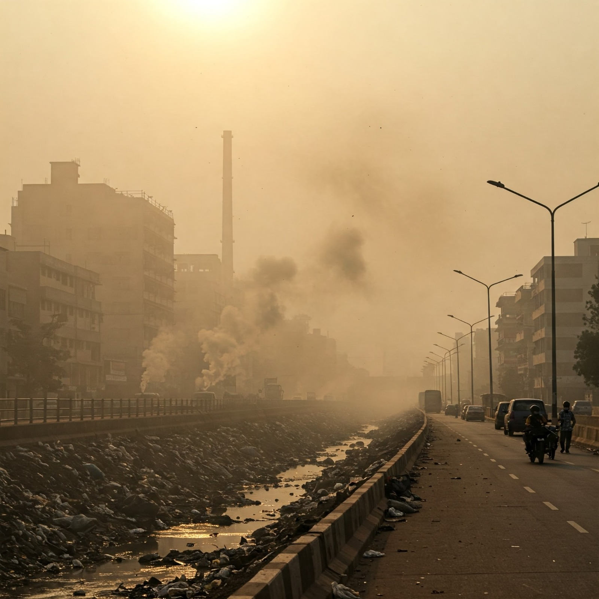

Air pollution, whether indoors or outdoors, results from harmful contaminants that can negatively impact our health. These pollutants can be physical, chemical, or biological in nature. While outdoor air quality issues have been widely recognized, discussed, and regulated for decades, awareness of indoor air pollution has gained significant attention only in recent years, particularly since the mid-2000
but what do you mean by indoor air ?
Indoor air refers to the air inside buildings and enclosed spaces, such as homes, offices, schools, and vehicles, where people spend most of their time. Unlike outdoor air, indoor air can become polluted due to limited ventilation, the release of chemicals from furniture and cleaning products, dust, mold, pet dander, and other contaminants. Poor indoor air quality can lead to health problems like allergies, respiratory issues, headaches, and fatigue. To maintain healthy indoor air, proper ventilation, regular cleaning, air purifiers, and controlling humidity levels are essential. Ensuring good indoor air quality is crucial for comfort, productivity, and overall well-being.
Outdoor air pollution is caused by harmful substances released into the atmosphere from natural and human-made sources, negatively impacting human health and the environment. Major sources include vehicle emissions, which release pollutants like nitrogen oxides (NOₓ), carbon monoxide (CO), and particulate matter (PM2.5 and PM10); industrial activities, which contribute sulfur dioxide (SO₂), heavy metals, and toxic chemicals; and burning fossil fuels, such as coal and oil, which produce greenhouse gases like carbon dioxide (CO₂) and methane (CH₄), contributing to climate change. Agricultural activities also play a role, with pesticides, fertilizers, and livestock emissions releasing ammonia (NH₃) and methane, which degrade air quality. Construction and mining generate airborne dust and particulates, while natural sources like wildfires, volcanic eruptions, and dust storms add pollutants to the air.
What are the pollutants that affect our indoor air quality?
Indoor air quality is affected by a variety of pollutants, which can be classified into physical, chemical, and biological contaminants. *Physical pollutants* include particulate matter (PM2.5 and PM10) from cooking, smoking, and burning candles, along with asbestos fibers from older building materials and lead dust from deteriorating paint. *Chemical pollutants* come from household products and combustion sources, such as volatile organic compounds (VOCs) emitted from paints, adhesives, and air fresheners; carbon monoxide (CO) from gas stoves and fireplaces; nitrogen dioxide (NO₂) from cooking appliances and outdoor vehicle emissions; formaldehyde from pressed wood furniture and carpets; and radon, a naturally occurring radioactive gas that seeps into homes from the soil. **Biological pollutants** include mold and mildew spores thriving in damp areas, pollen entering from outdoors, dust mites found in bedding and carpets, pet dander that triggers allergies, and bacteria and viruses circulating in poorly ventilated spaces. To improve indoor air quality, it is essential to ensure proper ventilation, use air purifiers, reduce exposure to VOCs, maintain cleanliness, control humidity levels, and minimize sources of indoor pollution. Implementing these measures can help create a healthier indoor environment and reduce the risks associated with poor air quality.
Improving indoor air quality is essential for maintaining a healthy living environment. Proper *ventilation* is crucial, as opening windows, using exhaust fans, and installing air exchange systems help remove stale air and reduce indoor pollutants. Using *air purifiers* with HEPA filters can effectively capture dust, pollen, pet dander, and fine particulate matter (PM2.5), reducing respiratory issues. Minimizing exposure to *volatile organic compounds (VOCs)* by choosing low-VOC paints, furniture, and cleaning products helps limit harmful chemical emissions. *Controlling humidity levels* between 30-50% with dehumidifiers or air conditioners prevents mold and mildew growth, which can trigger allergies and respiratory problems. Regular *cleaning and vacuuming* with HEPA-filter vacuums help remove dust, pet hair, and allergens from carpets, upholstery, and bedding.
Reducing combustion pollutants by **avoiding indoor smoking, limiting the use of candles and fireplaces, and ensuring gas stoves are well-ventilated** can prevent exposure to carbon monoxide (CO) and nitrogen dioxide (NO₂). Additionally, testing for *radon*, a radioactive gas that seeps from the ground, and sealing cracks in floors and walls can lower health risks. Indoor plants can also help absorb toxins and freshen the air, but they should be used in moderation to prevent excess moisture. Lastly, maintaining **HVAC systems and air filters** regularly ensures efficient air circulation and minimizes indoor pollutants, creating a healthier and safer indoor environment.